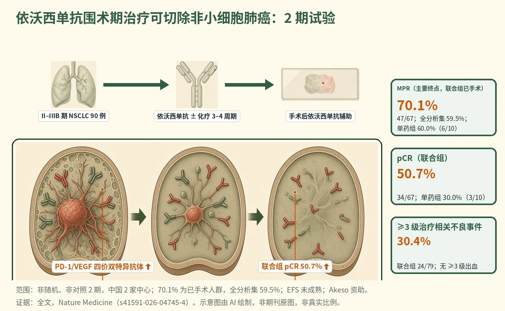

肿瘤免疫与细胞治疗
围手术期依沃西单抗治疗可切除NSCLC：联合化疗组手术患者MPR 70.1%
肿瘤免疫与细胞治疗
生成日期：
该非随机、非比较性2期试验评估了新辅助依沃西单抗单药或联合化疗，随后手术和辅助依沃西单抗治疗可切除非小细胞肺癌的方案。90例入组患者中，联合化疗组67例手术患者的主要病理缓解率为70.1%（按全部入组79例计即FAS为59.5%），达到了预设的基于历史对照（阈值41%）的主要终点。

- 90例可切除NSCLC入组
- 新辅助依沃西单抗±化疗
- 手术后辅助依沃西单抗
- 联合组手术患者MPR 70.1%（47/67）
示意图展示了围手术期依沃西单抗的治疗流程：新辅助治疗、手术、辅助治疗的序贯策略。
研究背景与待解问题
围手术期免疫治疗已成为可切除非小细胞肺癌的重要策略。依沃西单抗（ivonescimab）是一种抗PD-1/VEGF双特异性抗体，理论上可同时阻断免疫检查点和肿瘤血管生成。
本研究要回答的问题是：依沃西单抗用于可切除NSCLC围手术期治疗的初步疗效和安全性如何？
研究设计
这是一项开放标签、非随机、非比较性的2期临床试验。入组可切除NSCLC患者接受新辅助依沃西单抗单药或联合化疗，随后进行手术切除，术后继续辅助依沃西单抗治疗。
主要终点为主要病理缓解率（MPR），定义为残余活肿瘤≤10%。试验设计基于历史对照，预设了联合治疗组需达到的MPR阈值。
核心结果
疗效
- 单药组：10例手术患者中6例达MPR（60.0%）
- 联合化疗组：67例手术患者中47例达MPR（70.1%）
联合化疗组达到了预设的基于历史对照的主要终点。
安全性
- ≥3级治疗相关不良事件：单药组4/11（36.4%）、联合组24/79（30.4%）
- 未发生≥3级出血事件
- 未发生治疗相关死亡
对于一个含VEGF抑制剂的方案，围手术期安全性（尤其是出血风险）是重要关注点，本试验中未见≥3级出血是积极信号。
机制解读
论文所证实的： 依沃西单抗用于可切除NSCLC围手术期治疗显示初步活性，联合化疗方案的MPR率达到70.1%。
需要进一步验证的： 该MPR率能否转化为无事件生存（EFS）或总生存（OS）获益；相比已有的围手术期PD-1/PD-L1单抗方案是否有优势；需要随机对照试验验证。
局限与不确定
- 非随机、非比较性设计（研究早期曾1:1随机后改为非随机扩展），无法与当前围手术期标准（如帕博利珠单抗、纳武利尤单抗联合化疗）直接对比。
- 单药组仅10例手术患者，样本量极小。
- 主要终点基于历史对照，解读需谨慎。
- 鳞癌占78%，非鳞亚组MPR仅23.1%（3/13），人群选择性需关注。
- EFS和OS数据尚不成熟。
临床/产业意义
该研究为依沃西单抗在围手术期NSCLC的开发提供了早期疗效和安全性数据。能否进入注册性试验并与现有方案竞争，需要后续随机对照试验数据支持。